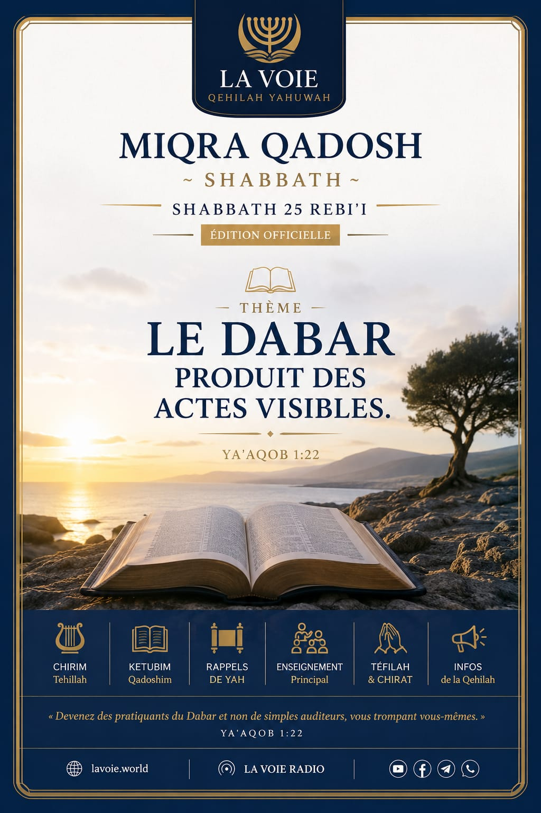

✦ ✦ ✦
Miqra Qadosh
Shabbath — Service d'ʿAbodah
Shabbath 25 Rebiʿi · Les Membres de La Voie
▶ Antre nan ʿAbodah
Le service complet jouera automatiquement
✦ ✦ ✦
Miqra Qadosh
Shabbath — Service d'ʿAbodah
— / 20
Appuyez sur ▶ pour commencer le service
0:00
0:00
◀◀
▶
▶▶
Programme du service